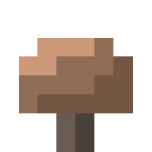
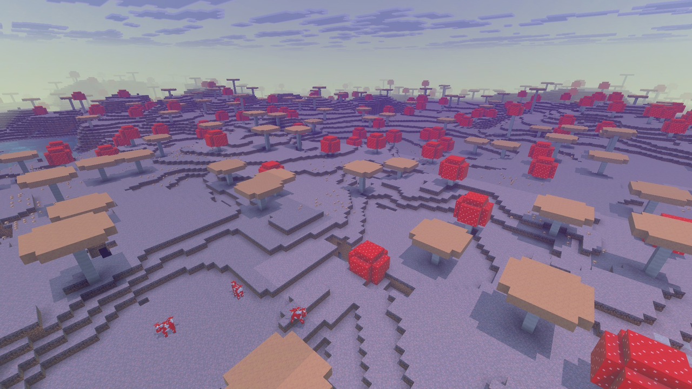
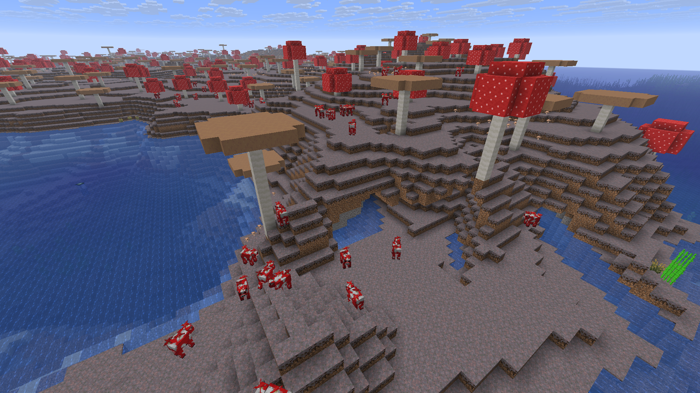
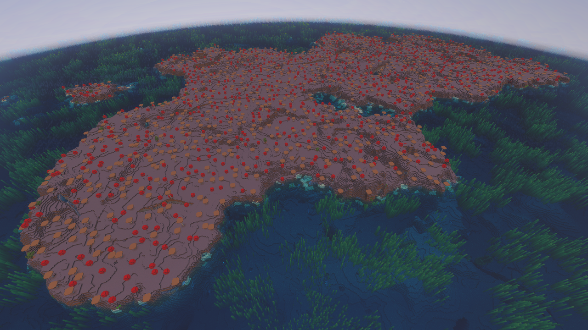
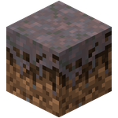
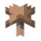
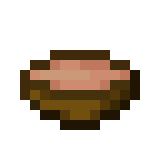
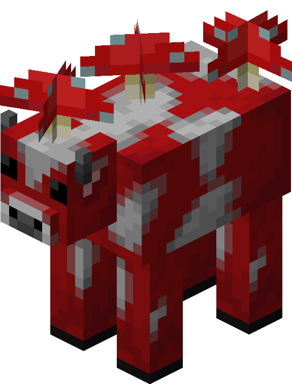
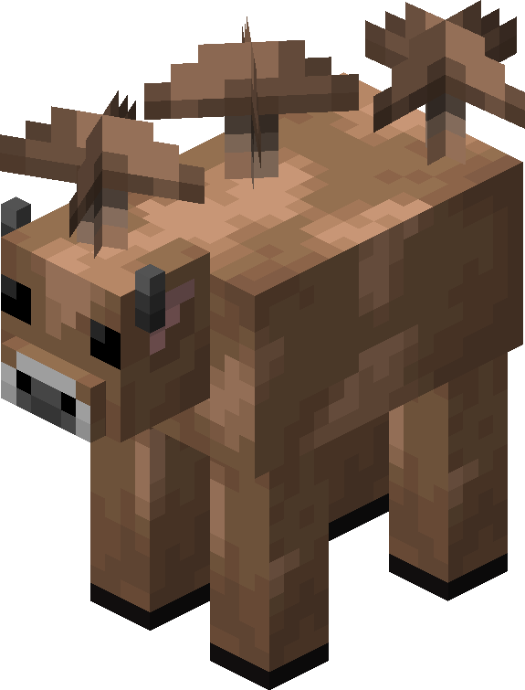

- Menu de Navegação

Campos de Cogumelos
Os Campos de Cogumelos estão entre os biomas mais raros e incomuns do Minecraft. Ocupando
aproximadamente
0,15% da superfície do mundo, essas regiões
normalmente surgem como ilhas isoladas em meio a
oceanos
profundos, muitas vezes a milhares de blocos das grandes massas continentais.
À primeira vista, sua paisagem dominada por micélio, cogumelos gigantes e Mooshrooms pode parecer apenas uma
curiosidade. Entretanto, os Campos de Cogumelos
possuem uma característica que os transforma em um dos
melhores lugares para estabelecer uma base segura: criaturas hostis comuns não surgem naturalmente
no
bioma.
Essa segurança vem acompanhada de algumas dificuldades. Não existem árvores naturais, muitos recursos básicos
precisam ser trazidos de outros biomas e encontrar
uma dessas ilhas pode exigir uma longa expedição
oceânica.
Características do ambiente
Os Campos de Cogumelos apresentam uma paisagem bastante diferente da maioria dos biomas da Superfície. O
terreno é formado por uma combinação de áreas
relativamente planas e colinas que podem alcançar
inclinações consideráveis. Entretanto, sua característica visual mais marcante está no solo.

Em vez dos tradicionais blocos de grama encontrados em grande parte do mundo, a superfície é
predominantemente coberta por micélio. Sobre esse terreno
aparecem grandes quantidades de
cogumelos
vermelhos e marrons, além dos enormes cogumelos gigantes que podem ser vistos de longe.
A ausência quase completa de árvores e vegetação tradicional também faz com que a paisagem permaneça bastante
aberta, facilitando a orientação e permitindo
enxergar grandes distâncias.
Localização e raridade

Encontrar um Campo de Cogumelos pode ser uma tarefa difícil. O bioma possui valores extremamente
baixos de continentalidade durante a geração do mundo.
Na prática, isso
significa que ele tende a aparecer muito distante das principais massas de terra.
Normalmente, Campos de Cogumelos são formados como ilhas cercadas por oceanos profundos.
Por isso, encontrá-los durante uma exploração terrestre é extremamente improvável. Na maioria das situações,
o jogador precisará navegar por grandes regiões
oceânicas antes de localizar uma dessas ilhas.
Ocasionalmente, várias ilhas de Campos de Cogumelos podem ser geradas relativamente próximas umas das
outras,
separadas por algumas centenas de blocos de oceano.
Micélio

O micélio é o bloco que forma grande parte da superfície dos Campos de Cogumelos e é uma das
principais características do bioma. Visualmente, possui uma aparência
acinzentada e arroxeada,
contrastando
bastante com os blocos de grama encontrados normalmente.
Uma de suas propriedades mais importantes é permitir que cogumelos permaneçam plantados mesmo sob níveis
elevados de iluminação. Isso torna os Campos de Cogumelos
excelentes locais para cultivar grandes
quantidades dessas plantas sem a necessidade de criar ambientes escuros
Caso o jogador queira transportar micélio para outro lugar, entretanto, será necessário utilizar uma ferramenta encantada com Toque Suave para coletar o bloco diretamente.
Vegetação
A vegetação dos Campos de Cogumelos é bastante limitada quando comparada a florestas, planícies ou selvas.
Não existem árvores naturais espalhadas pelo terreno e
praticamente toda a flora é composta por
cogumelos.

Cogumelos vermelhos e marrons aparecem em grandes quantidades sobre o micélio. Próximo às regiões costeiras
também podem aparecer ocasionalmente pequenas
quantidades de grama e cana-de-açúcar.
Apesar da baixa diversidade vegetal, a quantidade de cogumelos disponível é tão grande que eles se tornam um recurso extremamente fácil de obter.
Alimentos disponíveis
 |
|---|
| Recupera: 6 |
| Raridade: Comum |
Apesar da ausência de plantações tradicionais na geração natural do bioma, encontrar comida nos Campos de
Cogumelos dificilmente será um problema. As
Mooshrooms fornecem uma fonte extremamente conveniente de
alimento através do ensopado de cogumelos.
Além disso, elas podem ser criadas da mesma maneira que outros animais semelhantes, permitindo ao jogador
estabelecer uma população próxima de sua base.
Essa combinação transforma o bioma em um dos locais mais
fáceis para manter uma fonte renovável de alimentação. Entretanto, o ensopado não pode ser empilhado
da
mesma maneira que muitos alimentos tradicionais, o que pode torná-lo menos conveniente durante viagens
longas.
Por isso, ainda é útil estabelecer plantações ou trazer outros alimentos caso a ilha seja utilizada como base principal.
Fauna
O Campo de Cogumelos abriga algumas criaturas que não podem ser encontradas naturalmente em outros biomas.
Entre os animais característicos estão:
 |
 |
|---|---|
|
|
|
Pontos de Vida: 10 ( ) ) |
Pontos de Vida: 10 () |
| Comportamento: Passivo | Comportamento: Passivo |
Mooshrooms
Os Campos de Cogumelos são o único bioma onde Mooshrooms surgem naturalmente. Essas criaturas possuem
aparência semelhante às vacas, mas apresentam cogumelos
crescendo sobre o corpo. As Mooshrooms
vermelhas
são a variedade encontrada naturalmente no bioma e podem se tornar um recurso extremamente importante
para
jogadores que decidirem morar na ilha.
Além das utilidades normais associadas às vacas, as Mooshrooms possuem características especiais
relacionadas à obtenção de alimento. Utilizar uma tigela em uma
Mooshroom permite obter ensopado de
cogumelos, tornando essas criaturas uma fonte renovável e extremamente conveniente de comida. Isso
significa que uma pequena
criação de Mooshrooms pode fornecer alimento praticamente ilimitado para
uma
base.
Mooshrooms marrons
Mooshrooms vermelhas podem ser transformadas em Mooshrooms marrons quando atingidas por um relâmpago. O
processo também funciona de maneira inversa: uma
Mooshroom marrom atingida por outro relâmpago pode
voltar à variedade vermelha.
As Mooshrooms marrons possuem interações especiais que podem ser aproveitadas por jogadores interessados
em produzir determinados tipos de ensopado
suspeito.
Porém, depender de relâmpagos naturais para realizar essa transformação pode ser imprevisível.
Segurança
A principal vantagem dos Campos de Cogumelos é sua segurança. Criaturas hostis comuns não surgem naturalmente dentro do bioma, mesmo durante a noite.
Isso significa que zumbis, esqueletos, creepers, aranhas e diversas outras ameaças que normalmente
aparecem na Superfície não são geradas naturalmente sobre a ilha.
A mesma característica se aplica
normalmente às regiões subterrâneas que ainda pertencem ao bioma. Como resultado, caminhar pelos Campos
de Cogumelos durante
a noite pode ser muito mais seguro do que caminhar por praticamente qualquer
outro
bioma da Superfície.
Essa característica também reduz significativamente a necessidade de iluminar enormes áreas ao redor de uma base apenas para impedir a geração de monstros.
Dificuldade de sobrevivência
- (Muito Fácil)- (Muito Alta)
- (Baixa)
- (Muito Alta)
- (Extremamente Baixa)
Resumo
Os Campos de Cogumelos representam um caso incomum em que chegar ao bioma costuma ser mais difícil do que
sobreviver nele. Sua localização remota e a ausência de
madeira exigem preparação, mas uma vez
estabelecida uma fonte de
recursos básicos, a combinação entre segurança, terreno aberto, Mooshrooms e abundância de cogumelos
transforma essas ilhas em excelentes locais para bases permanentes.
Para jogadores que valorizam segurança acima de tudo, encontrar um Campo de Cogumelos pode significar descobrir um dos melhores refúgios naturais de todo o Minecraft.